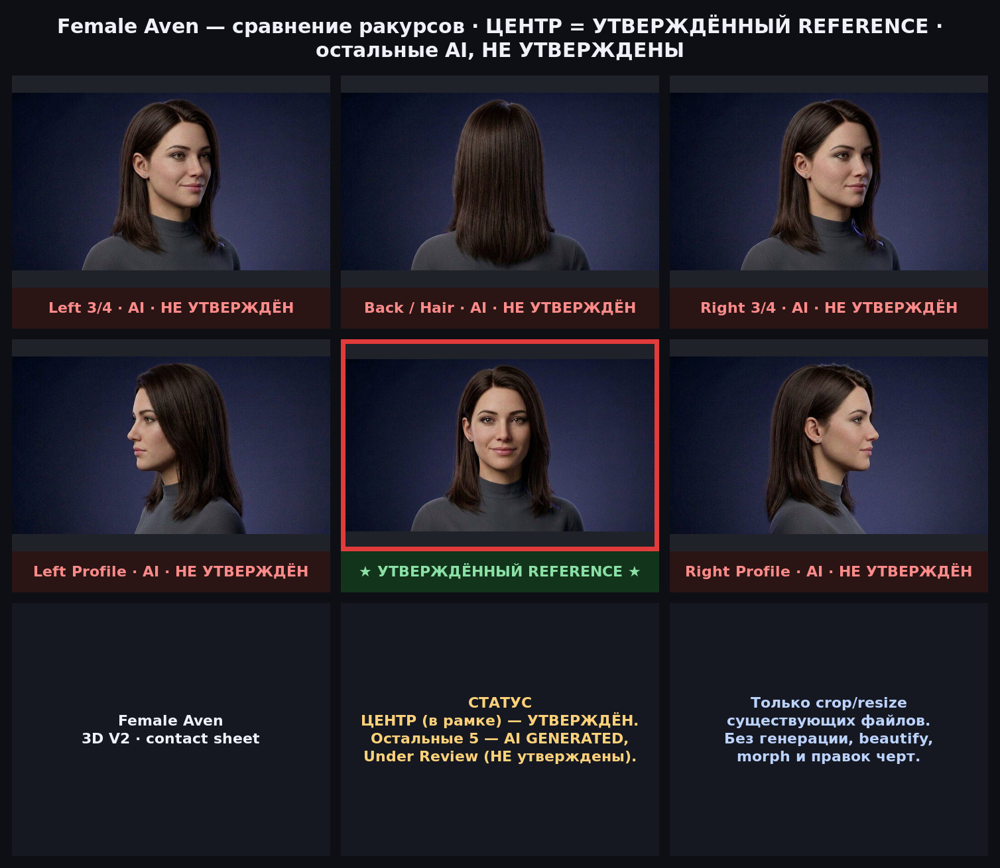
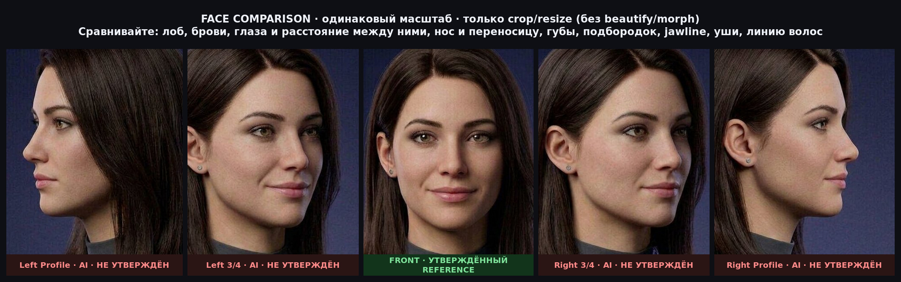

Hair A · Color B (dark chocolate) · Makeup B · charcoal mock-neck. Файл:
prototype/assets/character/master/female-aven-reference.jpg. Не изменять.


Это подсказка для оценки. Решение не сохраняется и не считается принятым автоматически — итог фиксируется владельцем отдельно.
docs/AVATAR_3D_V2_PLAN.md (статус Proposed, выбор — за владельцем).